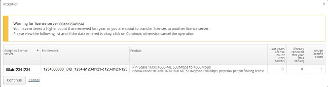
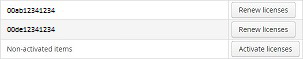

Renewing your licenses
About this task
A license is based on several parameters, including:
- Current server / host ID(s)
- Entitlement (ID)
- Product (ID)
- Product Description
- Total license count
- Last year's license count
- Remaining license count
In this step, you can check all these settings and adjust Host IDs and the amount of licenses per host to your current environment.
Before you begin
Before you can review and change your current license data, you must be logged in at the Renewal Portal and you must have entitlement IDs assigned to your user account.
Procedures
Options
To renew your current licenses, you have two options:
- Simple (one-click) renewal
If there are no changes compared to the previous year’s license requirements, you can renew the existing licenses for a license server using Simple Renewal.
- Advanced renewal
If you need a different combination of licenses, you can select and specify the servers and the quantities of licenses using Advanced Renewal and entering the required license counts in the table. The table lists:
- Total and remaining license count across all servers.
- Last year's license count (This server only) - Existing license count for the associated server.
- Already renewed this year (This server only) - Renewed license count for associated server.
- Renewed other host - License count migrated to an alternative server and renewed.
Simple renewal
If there are no changes compared to the previous year’s license requirements, you can renew the existing licenses for a server using the Simple Renewal feature, as follows:
- In the Advantest Renewal Portal start page, select the Renew licenses
tab.
The Renew licenses - server overview page opens.
- Click Renew licenses for the server that you want to renew.
The Renew licenses - assign to server page opens.
- Click Simple Renewal.Note The Simple Renewal button is deactivated if there have been any renewals on the selected license servers.
The License Renewal Summary window is displayed for the selected license server, listing the entitlement IDs, associated product descriptions, the existing license counts and the number of licenses to be renewed.
Note This is the last chance to cancel the action. Please ensure that the license renewal summary is correct before using the Generate button. - Click Generate to create the new licenses.
After you have renewed all your license on a particular license server, download these licenses and install them on your license servers.
Advanced renewal
To specify a new combination of licenses and servers for a selected license server, complete the following steps:
- In the Advantest Renewal Portal start page, select the Renew licenses
tab.
The Renew licenses - server overview page opens.
- Click Renew licenses for the server that you want to renew.
The Renew licenses - assign to server(s) page opens displaying the existing license information for all entitlements that are hosted on the selected license server.
There are two main actions that you may execute:
- Specify an additional or alternative license server to manage the renewed licenses
- Specify the number of licenses to be assigned for each entitlement and each license server, if you have the license management split over more than one server.
- To get an overview of the entitlements, the licenses servers that manage them and the
license details, click Advanced Renewal.Note The Advanced Renewal button expands the table showing the licenses.
- Optional: You can change the view of the table to show either the product names or
the entitlement IDs. Click the toggle link Change to Entitlement ID View / Change to
Product View.
To sort any table column alphabetically or numerically click the header of the column.
To find a particular product or entitlement ID, enter a string - corresponding to the required entitlement ID or product - in any of the filter fields below the column headers and press Enter. The list of products or entitlement IDs is filtered to display only those items that include the specified filter string.
- For each entitlement that needs licenses to be renewed, assign the license count for each
associated server. Change the managing license server, if required.
If you want to split the license count across more than one license server, complete the following additional steps:
- Select a server that is to manage one or more new licenses and enter the required license
count for that server.
If the entered license count is less than the total required, the Split Line button is activated. The split button and other functions are active when you leave the number field (click in another field or outside of the field).
If the number in the count field exceeds the maximum license count, the number box is highlighted in red. You can display a tooltip-style error message for any assignment errors.
Use the Assign Server and License Count up to Last Years Count button if you want quickly specify the same values as used last year and/or move the licenses to another license server. This is helpful if most values are to remain the same and you want to edit only a few license counts. This function can only be used before specifying any changes.
- Click Split Line to select an additional server.
From the new menu, select an additional server and enter the required license count for that server.
- If you want to add a new license server, select Enter new server.
The Add new license server window opens. Enter the name of the new server and specify the server type.
Click Apply.
- Enter the required license count for the new license server. Note Any newly-added server is stored if you associate a license with it. If you do not use it and leave the page, the new server is not saved and must be added again if required.
Click Reset, if you want to remove any pending changes.
- Select a server that is to manage one or more new licenses and enter the required license
count for that server.
- Click Generate License ... to generate a license renewal
summary.Note If you enter a different license server or a higher count as last year, a warning summary window is displayed. If the information entered is correct, click Continue to generate a license renewal summary.

- Click Generate License to create the new licenses.Note This is the last chance to cancel the action. Please ensure that the license renewal summary is correct before using the Generate License button.
After you have renewed all your licenses on a particular license server, download these licenses and install them on to your license server.
Non-activated licenses
Non-activated licenses are:
- New licenses that have not been activated
- Existing licenses that were not renewed last year
If non-activated licenses are available, the Renew license – server overview page displays the entry Non-activated items at the bottom of the list:

Click the Activate licenses button to open the page displaying the non-activated licenses, from which you can activate or renew the licenses.
After you have activated or renewed a license to a license server, you can view these licenses in the Renew license – server overview page by selecting the associated license server.
Results
All selected licenses are renewed and can be installed on the license server after you have downloaded them.
What to do next
Proceed with Downloading Licenses.